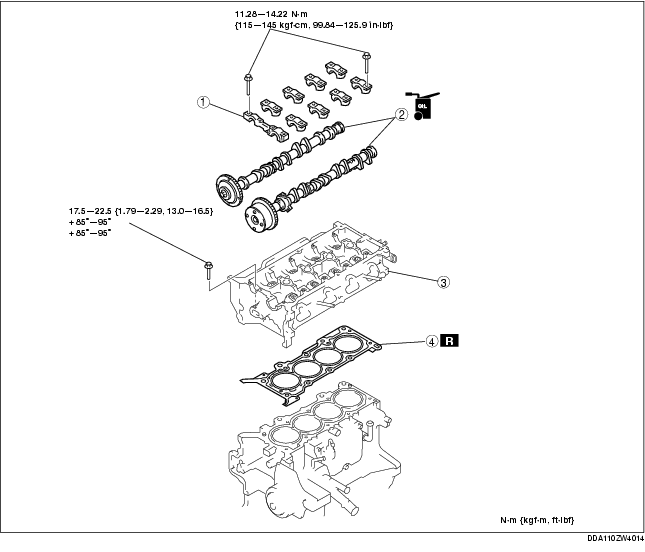

1. Remove the timing chain. (See TIMING CHAIN REMOVAL/INSTALLATION [ZY].)
2. Remove the EGR pipe and EGR valve bracket. (With EGR) (See INTAKE-AIR SYSTEM REMOVAL/INSTALLATION [ZY]) (See EXHAUST SYSTEM REMOVAL/INSTALLATION [ZY].) (See EGR VALVE REMOVAL/INSTALLATION [ZY].)
3. Remove the exhaust manifold. (See EXHAUST SYSTEM REMOVAL/INSTALLATION [ZY].) (See EXHAUST SYSTEM REMOVAL/INSTALLATION [ZY].)
4. Remove the intake manifold. (See INTAKE-AIR SYSTEM REMOVAL/INSTALLATION [ZY].) (See INTAKE-AIR SYSTEM REMOVAL/INSTALLATION [ZY].)
5. Disconnect the heater hose, bypass hose, and radiator hose.
6. Remove in the order indicated in the table.
7. Install in the reverse order of removal.
8. Inspect the compression. (See COMPRESSION INSPECTION [ZY].)

.
|
1
|
Camshaft cap
(See Camshaft Cap Removal Note.)
|
|
2
|
Camshaft
|
|
3
|
Cylinder head
(See Cylinder Head Removal Note.)
|
|
4
|
Cylinder head gasket
|
1. Loosen the camshaft cap installation bolts in two or three steps in the order shown in the figure, and remove them.
1. Loosen the cylinder head installation bolts in two or three steps in the order shown in the figure, and remove them.
1. Measure the length of each cylinder head installation bolt.
2. Tighten the cylinder head installation bolts in three steps in the order shown in the figure.
(1) Tightening torque: 17.5-22.5 N·m {1.79-2.29 kgf·m, 13.0-16.5 ft·lbf}
(2) Tightening angle: 85°-95°
(3) Tightening angle: 85°-95°
1. Align the No.1 cylinder camshaft position to the TDC position, and install the camshaft.
2. Install the camshaft caps in the positions numbered as shown in the figure, and then temporarily tighten the No.2 and No.7 camshaft cap installation bolts.
3. Tighten the camshaft cap installation bolts in two or three steps uniformly in the order shown in the figure.
Tightening torque